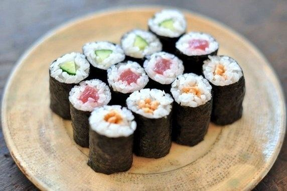
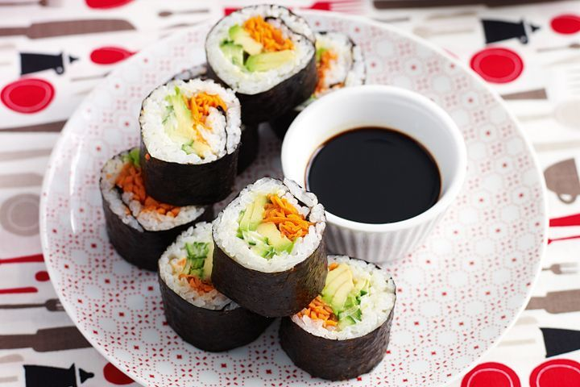
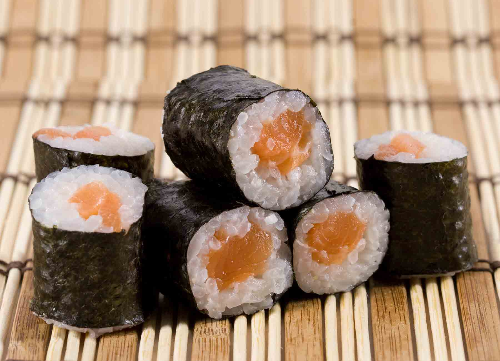
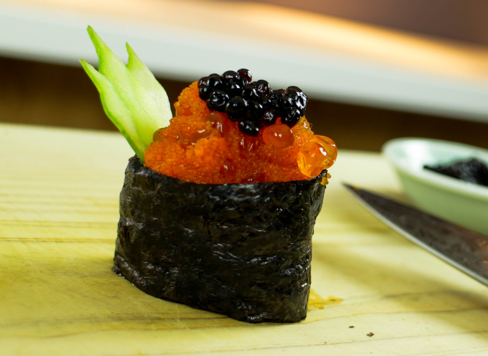
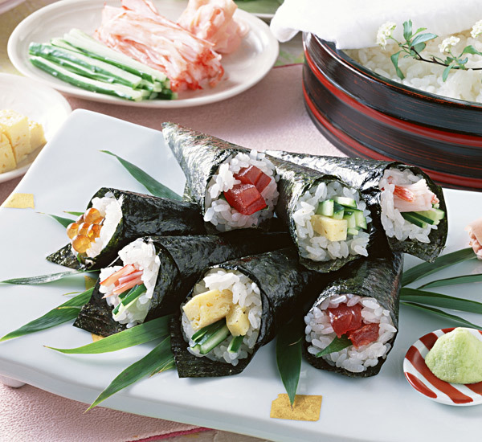
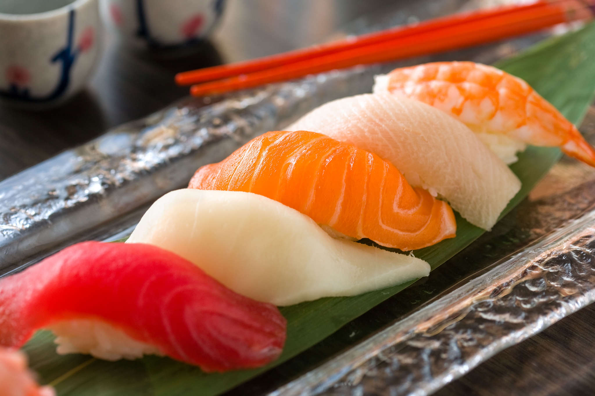
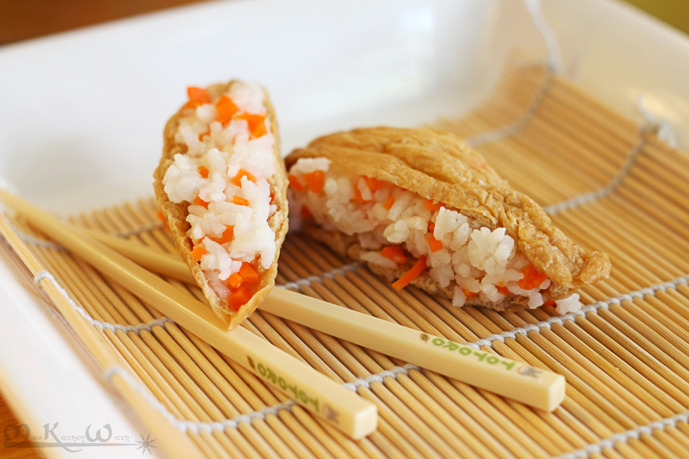
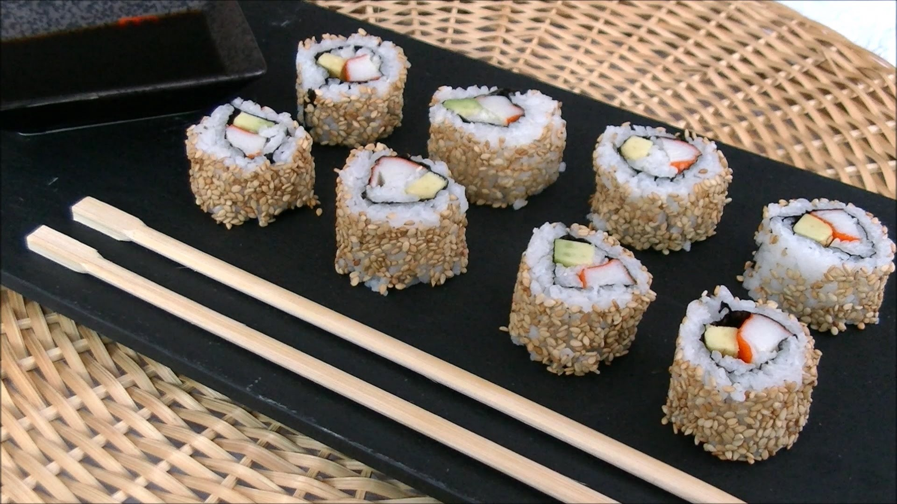

Sushi je tradičné japonské jedlo z ryže ochutenej octovou omáčkou spolu s rôznými surovinami. História sushi sa začala v ôsmom storočí a to konkrétne tak, že panovníkovy Keikovy boli servírované surové biele škeble s octom, ktoré mu tak zachutili, že ich vynálezcovy Mucukarimu Mikotovy udelil titul hlavného šéfkuchára. Hovorí sa že od vtedy Japoncom zachytili morské plody v enormnom množstve. Ryža sa uvarí do mäkka a za rýchleho ochladenia sa zmieša s ochutenou zmesou octu a vody. Japonské slovo suši pôvodne znamenalo ľahké ryžové jedlo. Jeho význam sa časom skonkretizoval a označuje kombináciu octom ochutenej ryže s inými surovinami.Charakteristickou surovinou sú napríklad surové ryby, ikry alebo aj plody mora a zelenina. Sushi sa vyrába tak, že surovinu (rybu,ikry, zeleninu...)obalíme ryžou, ktorá je po okrajoch obalená sušenou morskou riasou, rolku následne nakrájame na vhodné "krúžka" a podávame spolu so sójovou omáčkou alebo wasabi. Malé reštaurácie špecializované na podávanie suši sa v Japonsku nazývajú sušija.
Následne sú źobrazené tipy sushi

Maki
valcové kúsky suši s priemerom asi 4 cm, krájané z dlhšej rolky, v ktorej je surovina obalená vrstvou ryže a na povrchu plátkom riasy

Futomaki
Hrubšia verzia Maki s priemerom 6 cm

Hosomaki
Tenká verzia Maki s priemerom 2 cm

Gunkan-Maki
Obal z morskej riasy vytvára priestor pre kaviár alebo iné

Temaki
Z morskej riasy je vytvorený kornút, ktorá je plnený ryžou a surovinami, ako jediný sa je rukami

Nigiri
V ruke stlačený kúsok ryže na ktorý je následne položený kúsok surovej ryby alebo iné

Inarizushi
Vyprážané taštičky plnené ryžou a surovinami

Uramaki
Suroviny sú stlačené samostatne v morskej riase ktorá je obalená ryžou a semiačkami